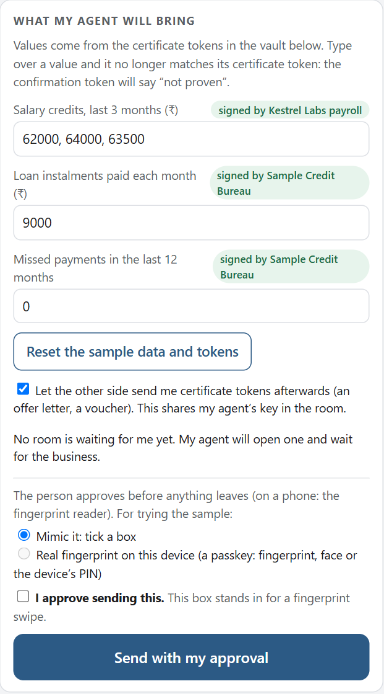
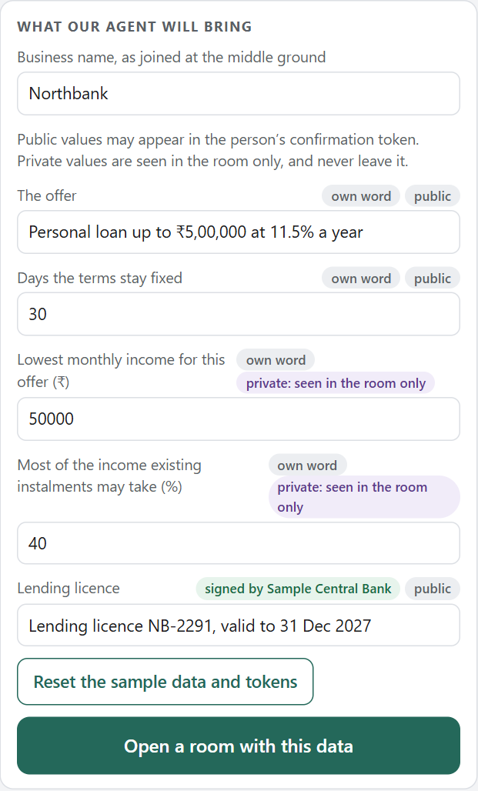

Agent Middleground Protocol (AMP)
A meeting place for agents and APIs to view each other's data and take back confirmation tokens while ensuring data privacy
Abstract
The internet was designed around people viewing apps or websites on their screens, companies hosting their products/ services on cloud servers and the two sides interacting through APIs. In the AI agent era, when the rules of UI and UX are undergoing major changes, almost everyone will soon have a personal agent, and data exchange or visits to company servers will massively increase in volume. This calls for innovation not just in how companies handle agents using their existing servers, but instead for new ways for agents and APIs to interact and exchange data. The Agent Middleground Protocol (AMP) is a proposed solution in which agents and APIs meet at a neutral Agent Middleground in the cloud, see each other's private data under the supervision of a trusted middleground program, and each side takes back only a verification token of what it saw, never the actual data itself. This not only ensures full data privacy, but opens up new use cases that were not possible so far. The Agent Middleground runs a hash verified code from a public approved Github repo like the repo linked in this paper. This allows any company or individual to start hosting an Agent Middleground in the cloud. The code is such that the middleground mediates each side to view other side's data and take back confirmation tokens that contain only high level summary essential to take decisions, but never the actual data of other side. Also the middleground does not store any data in the server and purely functions as a mediator.
- Personal agent
- A person's own AI agent, which also stores their personal info and any digital certificates, on their phone or backed up in the cloud.
- Business agent
- A company's module inside their existing user facing applications that are made ready to meet personal agents.
- Agent Middleground
- The neutral server where both sides meet. Anyone can host one. It runs public code and retains nothing.
- Confirmation token
- What the middleground writes for each side after a meeting: what was seen and confirmed, as a yes or no, a range or a count, never the actual data itself, but only high level confirmation details.
- Certificate token
- A piece of data signed by whoever issued it: like a salary credit signed by the employer, a digital bill signed by the shop. This is typically collected by a user's personal agent. It can be checked the way a browser checks a website's https certificate.
- Personal data token
- The person's own words or typed in data converted to a suitable format by the personal agent, signed by user with a fingerprint swipe.
1. Introduction
Currently for data exchange between individuals and companies, the two options are at either extreme:
i, Handover too much personal information. A user has to share too much personal info to companies that ask for personal ids, financial information, etc. The user is powerless when it comes to data privacy since they have to share all asked information without questioning to get a company's service. This is not just data privacy violation, but also further increased risk of data mishandling after the company stores these details in the servers, with risk of future data breach or even selling to third parties.
ii, Very little information is shared. Too much freedom for the user means, they can misrepresent the facts. Also without proper reliable information, the company is not able to offer genuine service. This will result in lot of bad transactions and mistrust in the transactions.
The same two choices appear almost everywhere in financial transactions, marketplace or e-commerce, etc.
Why now. Soon it will be personal agents that will be interacting on behalf of users for tasks like checking for offers, booking, applying for financial products, comparing product options across different companies, etc.
Each one of these involves a data exchange. If each one means handing over personal data, then the risk of personal data being shared with too many companies without any moderation will increase. On the other hand if the agent does not share any data or does not show any proof for the data it quotes, then companies will not be able to rely on such interactions initiated by agents for anything that matters and the service will not be rendered.
As use of personal agents increase, people will no longer be opening one app after the other, but instead their agent will gather the results from many services and show them as one short list of summaries, which the person glances at once or approves with one fingerprint swipe. This means the agents should be able to get the most reliable info from companies for the users and share personal data and transact carefully, while acting on behalf of a user.
To do reliable data exchange that gives the most accurate info while maintaining data privacy, we need to design slightly innovative ways of exchanging data between users and companies. Enter Agent Middleground Protocol (AMP)
The idea: witnesses in a neutral room
Think of a hypothetical scenario of how two careful parties can do this in the physical world. Let us take a real-world example of a user applying for a loan and bank interested in offering a loan. The most privacy preserving and trustworthy manner to do this will be if the customer and the bank each send a trusted witness to a neutral room. On the table go the salary slips and the bank's private limits. A referee holds the rules: what each witness may look at, and what each may report back. Each witness returns home and says one thing, such as "Income is above your minimum" or "You qualify". The papers stay with the original owners.
AMP builds exactly this, for software. The neutral room is a server called an Agent Middleground. The witnesses are the two sides' agents: the person's personal agent and the bank's business agent. The referee is a short public rule sheet, which lets answers out only in fixed shapes: a yes or no, a range, a count. Each witness's note is a confirmation token, signed by the middle ground and it contains information like whether it is suitable or not, above a certain range, met the required rules, etc instead of actual private data changing hands.
Three things make this system work.
Proof, not claims: Input like salary slip, digital ids, health report, etc are digital verified reports that are provided by authorised parties. They are received digitally and stored and showed around by the personal agent. The original issuer details can be verified in the middleground instead of just trusting the data brought by the personal agent.
Privacy both ways: The privacy part of not handing over unnecessary details benefits both the sides. So even businesses can assure users with authentic data by allowing personal agents to see the data inside the middleground, but the personal agents can only take back confirmation tokens instead of the actual data.
Neutral and visible: The middle ground belongs to neither side, runs a public code from an approved github repo. It is designed to show exactly which code it is running and from which repo. A user can do hash verification to confirm it.
All of these are accomplished using ordinary cloud servers, https and standard signatures that already exist.
2. The building blocks
2.1 The personal agent
The person's own base. This personal agent layer mentioned in the AMP paper is concerned with collecting issued certificate tokens on behalf of the user and giving a suitable memory area for user to store any additional personal data that they need to use frequently across different apps. The agent also provides the logic that allows a user to view and approve the various interactions and data taken to Agent Middlegrounds by means of a fingerprint swipe on their smartphone. This can also serve as a base or context layer to any personal agent apps that the user wants to use for doing transactions.
Certificate Tokens : These are pre-signed certificates or digital proofs issued to a person from external issuers like bills and warranties, salary credits, bank balances, health reports, tickets, work history, the legal terms & conditions they agreed to, etc. These can be taken to the middleground as already proven data with the details of the issuer and thus gaining instant trust from the other side.
Personal tokens. Some of the details stored in the personal agent are data entered by the user into some data fields for safe storage and for usage with their personal agent. Such data which did not originate as a confirmation token from an external issuer, can be used with the user's personal guarantee and signature. The user can signs these as personal tokens in the agent console via an authentication method like fingerprint swipe or PIN or face ID. A personal token put data entered by a user into a digitally signed token format for use with agent middlegrounds.
The fingerprint swipe. The phone unlocks the agent's signing key only when the fingerprint matches, using the secure chip that phones already use for payments. Phone and laptop browsers can ask for the fingerprint, the face or the device's PIN through a passkey, on any page served over https. The agent provider names the device's passkey in the person's real person pass, and the middle ground accepts a swipe only from that passkey, so the swipe is tied to that one person. One swipe approves exactly what is on the screen, and nothing after it. Small items can be approved together as a short list, such as a shop's loyalty check and a job match. Important items always get a screen and a swipe of their own.
2.2 The Agent Middleground
A new kind of place on the internet, made for agents rather than people. It runs code from the approved public AMP repo, shows proof of the code it runs, lets in only verified visitors, works out each answer using a public rule sheet, lets the two sides take back only approved details, and stores nothing for itself.
An Agent Middleground is a small server. Its code is public on GitHub, and it runs on any ordinary cloud server. Its public page lists the files it runs, along with a code fingerprint of them: a short code worked out from every file, which changes if any file changes. Only two kinds of visitors are let in: organisations that have joined the middle ground, and personal agents that carry a real person pass from their personal agent.
Rule sheets. Each kind of meeting has its own short rule sheet, published along with the code. It says who the two sides are, what each side brings, what may be looked at, and which answers each side may take back. A credit offer has one rule sheet, a loyalty discount has another, and a company can write a new one for its own kind of offer. Every confirmation token names the fingerprint of the rule sheet that produced it, so anyone can read exactly which rules were applied.
Answers in fixed shapes. The work a rule sheet does is deliberately simple: it checks tokens, compares a value with a limit, places a value in a range, or counts (Figure 4). Every answer has to take one of a few fixed shapes: a yes or no, a range, a count, or a choice from a fixed list. A value that comes without a valid certificate token is still looked at, but the answer based on it is marked "not proven". The middleground code only allows confirmation tokens to be returned to either side and if any rule sheet tries to copy data, it is stopped by the AMP code. So even a badly written rule sheet cannot pass data from one side to the other.
A waiting room. The two sides never talk to each other directly, and therefore they do not need to be online at the same time. The first side to arrive leaves its data in a room, held in memory only, and goes away. When the other side arrives, the middle ground does its work at once, and each side collects its confirmation token the next time it checks in. The same two sides can meet only a few times a day under one rule sheet, so that neither side can work out the other's private values by asking many slightly different questions. Most rooms are pair rooms, where one side meets one other side: a person and a company, or two people such as a buyer and a seller. In a pool room, one company's agent or API meets many personal agents and gets back only overall counts.
Who hosts. Anyone can host a middle ground: any company, government institution, individual. Companies that people already trust with their data can host one under their own name and start right away. Since it is a small program on an ordinary server, cloud providers can also offer it as a new kind of ready-made cloud feature, the way they offer various modules today. The cloud provider has to design a cloud module such that it shows what code is running inside, the file system and a hash confirmation of the code. This means the company or person hosting the AMP on the cloud provider cannot tamper the hash and this becomes a fully reliable offering. No blockchain or special hardware is needed. The two sides only have to agree on which middle ground to use, and an agent checks a middle ground by program before using it, by comparing the files it runs with the public code (section 5.3).
How a host earns. A host can charge a tiny fee for each request, paid through the personal agent's subscription so that the host never learns who asked. It can take a small share when a deal succeeds, such as a shopping purchase, a financial transaction or successful hiring of a candidate, etc. It can also carry ads made for the agent era: an advertiser leaves one short message, and the middle ground passes it on, marked as sponsored, only with the requests it fits. This offers two-way benefits: 1, The user sees highly relevant ads without any personal tracking used by current ad servers 2, Companies can get more successful targeting since the middleground sends their ads to the most targeted and real users, but without any privacy concern for the users. A cloud provider may also run a middle ground for free as a part of attracting users and companies to its overall cloud suite.
2.3 The business agent
The company's side made ready for the agent era. It is just a new module or function to be added to the systems the company already runs, not a new system.
Today a company serves people through its website and app, which are built for people to look at, and through APIs that other companies call. Personal agents need something different, especially multiple rounds of interactions to complete a successful transaction. The business agent lets the company meet personal agents at middlegrounds, using the systems and data it already keeps. It has four jobs, shown in Figure 5 for a maker of home appliances.
Publish offers. The company publishes its products, prices and offers once, at the middle grounds it uses. Agents read them there, instead of scraping websites that were made for people.
Meet personal agents. In a room, the business agent brings the company's private data, such as a bank's lending limits, an employer's pay budget or a maker's discount rules. It gets back confirmation tokens, instead of documents that it would then have to store and protect. From pool rooms it can learn real but anonymous counts, such as how many people in each city want a product.
Complete transaction the right people. When the rule sheet confirms that a person qualifies, for example as a genuine buyer, the company can give the discount or a custom pricing to that person directly.
Issue certificate tokens. The company already hands out bills, warranties, payslips and offer letters. The business agent signs these from the company's own systems and sends them to the person's agent as certificate tokens, which the person can later bring to other meetings as proofs.
2.4 Issuers and tokens
What a person types in is their own word. Issuers turn it into proof: an employer signs salary credits, a shop signs bills, a maker signs warranties.
The internet has already solved a similar problem. When you open a bank's website, your browser checks a certificate saying that the site belongs to the bank, signed by a certificate company that the browser trusts. Certificate tokens work in the same way (Figure 6):
- The issuer makes a key pair once, and keeps the secret key in its own system.
- A registry checks the issuer once, and signs a key note: this issuer, at this web address, has this key, until this date. A registry can be a business registry, a banking regulator or a university body.
- Every certificate token carries the key note, and is issued to one agent's key.
- The middle ground checks the whole chain: the registry, the key note, the issuer's signature, the agent holding the token, the date, and that the value brought matches the token exactly. Nobody has to be called, because everything needed is inside the token.
Important matters like financial transactions can choose to accept only listed issuers, confirmed by a registry that the middle ground trusts. Small matters, such as a small shop's discount, can accept an unknown issuer whose key is published on its own https website. Anyone can check such a key by hand, by opening the issuer's website and comparing it with the key id in the agent. Lists of trusted issuers will grow over time, as the lists of certificate companies did for https. Similar ideas already work at national scale in India: documents in DigiLocker carry the issuing department's signature and count as originals, and every GST e-invoice carries a signed QR code.
Checking and carrying tokens. Anyone can check a token with its signer's public key, and if even one character has been changed, the check fails. For a confirmation token, the code fingerprint inside it should also match the public code. Every token names the agent that holds it, so a copy in anyone else's hands is of no use. A confirmation token can itself be brought to a later meeting as proof: "income above ₹50,000: yes" can go to an insurer next week, without the salary credits. The fields of each kind of token are listed in the sample code.
3. One meeting, step by step
One meeting from start to end: a person, Asha, and a bank, Northbank, meet over a personal loan offer. This is the first sample in the starter code listed later in this section and every value below is the sample's own.
Today, to find out whether Northbank will lend to her, Asha would upload three months of bank statements and salary slips, and she would do the same again for every other lender she tries. With AMP, her personal agent and Northbank's business agent meet at a middle ground under the public "credit offer" rule sheet, and neither side's data goes to the other (Figure 7). This allows people and companies to genuinely interact for checking current fit for potential future transactions without revealing too much data and yet building full trust. The importance of this example is about how initial exchanges between two parties can be done without revealing too much data, but ensuring both sides can trust each other based on some authentic data. This way a user can interact with multiple providers quickly and reliably via their personal agents. The final actual transaction with a chosen provider may still happen in the traditional face to face manner based on legal requirements.
- Northbank opens a room. Its business agent opens a room at the middle ground with its public offer, its private limits and its lending licence, which is signed by the central bank. Any agent can read the offer, but not the limits.
- Asha approves. Her agent finds the room, reads the rule sheet and gathers the certificate tokens it asks for: her salary credits, signed by her employer, and her repayment record, signed by a credit bureau. Asha sees one screen, "Send these to Northbank's room?", and approves it with a fingerprint swipe.
- The middle ground checks. Whichever side arrives first waits for the other. When both are in, the middle ground checks every token, and the rule sheet looks at both sides' values together. The middle ground then signs a confirmation token for each side and wipes the data.
- Each side reads its token. Asha learns that the lender is licensed and that she qualifies, but not where Northbank's limits are. Northbank learns that she meets its rules and who signed each piece of proof, but not her salary or her name.
- Asha decides. If she wants the loan and chooses Northbank from among different such bank interactions, then Asha and bank can exchange actual data and contact info and interact further in the existing process. Or else, even these steps can be modified to be done using personal agent. Asha accepts with a fresh swipe, and only then does the bank learn who she is. Northbank sends its offer letter to her agent as a certificate token, with the terms fixed for 30 days.
Section 7.1 looks at what this changes for people and for lenders.
3.1 Try it yourself
The code for the middle ground, the personal agent and the business agent, with this meeting and the other samples, is public at github.com/tonymcodes/Agent-Middleground-Protocol. It is starter code, not a product. It lets anyone run a middle ground on their own computer, watch a meeting from both sides, change the values, try fake tokens and write a rule sheet of their own. It needs only Node.js, version 18 or later.
git clone https://github.com/tonymcodes/Agent-Middleground-Protocol cd Agent-Middleground-Protocol npm start then open http://localhost:8787/try/


Things to try: run the credit offer as it is; lower the salary at the mock issuers and see the answer change; try the six kinds of fake token, each refused with its reason (section 5.2); let two people sell a bicycle; send a token back, such as the offer letter; and write a rule sheet of your own. The repo's README also shows how to run each page on its own port, or on separate machines.
4. Examples
Fifteen use cases, to show the range of what AMP makes possible. Four of them are worked out in detail in section 7.
Shopping without spam. A person's agent states what the person wants to buy, and makers and shops answer at a middle ground. A shop learns only the area and a budget range, not the person's name, and the person gets at most one sponsored message, matched to what they asked for.
Financial offers without statements. A bank, an insurer or a lender finds out whether a person meets its rules, such as income, repayments or existing cover, without receiving a single statement. The person finds out which offers they qualify for before applying.
Loyalty discounts from bills. A maker wants to reward people who buy its products often. The person's agent brings the bills, signed by the shops, and the maker learns only something like "bought 6 to 10 times since June". It does not see the bills, or anything else the person bought.
Catalogues straight from makers. Makers publish their products directly to the public via middle grounds. The personal agents can use them to build shopping assistants across different categories. Online delivery companies can then focus on delivery and service by connecting with the shopping agent inside the personal agents and adapt to users shopping via agents.
Marketplaces for used goods, tickets. The seller proves ownership with the shop's bill and the maker's warranty, and the buyer proves that they have the money. Neither side's price limit is shown to the other. This helps to create marketplaces using middlegrounds.
Finding people with shared interests. Two people's agents meet over their interests, their history and their own words, backed by tokens where possible. Each person learns whether there is a match, and contact details are passed on only when both accept.
Pay talks with verified summaries. A person brings one verified figure, such as their pay signed by their employer. In return they see a verified summary of pay for their kind of work in their city. No one sees anyone else's pay.
Health data pooling. People keep the reports from hospitals, labs and consultation apps in their personal agent. When an authorised health office asks a question, for example whether breathing problems have gone up after a spell of pollution, each agent answers according to its person's own rule, with a short summary: the area, an age range, and whether a recent test showed the problem. The department sees only counts by area. Today these records are scattered across clinics, and users and there is no quick way to collate such health information.
Hiring. A resume becomes a set of certificate tokens, and roles and candidates meet at a middle ground all the time. Salary expectations are checked against the budget without either side seeing the other's number.
Checks between companies. A buyer checks that a supplier's turnover, certifications and tax filings meet its rules, without the supplier having to share its accounts.
Investor updates. A young company wants to show that it has reached certain milestones, such as users growing every month and revenue above a mark, to its investors and to people who might invest later. It cannot hand its analytics to people who are not yet investors. At a middle ground, figures signed by its analytics and payment systems are checked against each investor's questions, and each investor takes back only a confirmation token, such as "revenue above ₹1 crore a quarter: yes".
Legal terms and agreements. Fine print is almost impossible for people to read, and a clause in one service's terms can quietly contradict a clause the person has already agreed to elsewhere. The personal agent keeps the terms the person has agreed to across all their apps and services, each signed by the company as a certificate token, and shows the person a short summary. Before the person signs up for something new, the agent takes these terms to a middle ground, where the new company brings its terms, also signed. The new terms are read clause by clause against the old ones, and anything that contradicts what the person already agreed to, or any clause worth knowing about, is pointed out in plain words. The two sides can then negotiate there, round by round, with each round written down and signed, and confirm only when both agree.
Age checks. A website or a shop learns "over 18: yes", backed by an identity certificate token, and nothing more. It does not learn the person's name or date of birth.
Local services. A person asks for a plumber or a tutor nearby. Verified local providers answer with their prices and licences, and the person's address is shared only with the one they choose.
Cities and traffic planning. A city can ask the people going to a big event where they will travel from and how, and plan traffic and transport based on the counts.
5. Security
Each step of a meeting adds its own check: the fingerprint and person pass, the joined company, the token chain, the rule sheet, the code fingerprint and the signatures.
5.1 The person
A real person pass from the agent provider says one real person stands behind the agent. It stops programs posing as people, and makes every agent interaction to be authorised by a real human. The fingerprint guards the key: malware on the phone cannot sign without the person's swipe, and the device's signature covers this agent and this very request, so it cannot be reused. Anyone can check it again: when the person shares their agent's key with the other side, that side's token carries the device's own signed approval and the pass, to check on its own computer. Otherwise it carries only the middle ground's word, so two meetings cannot be linked to the same person. A lost phone still needs the fingerprint, and the person can cancel the pass through their provider.
5.2 Certificate tokens
Every token in the sample is signed with EdDSA [1]. The sample code demonstrates how to test by making six kinds of fake tokens, and each runs into a different check:
| Fake | What catches it |
|---|---|
| A value changed after signing | The signature no longer matches. |
| A forger signs in the issuer's name with its own key | No trusted registry confirmed that key. |
| A forger writes its own key note in the registry's name | The key note is not signed by that registry. |
| A key note from a registry nobody trusts | The registry is not on the middle ground's list. |
| A real token issued to someone else | It names another agent's key. |
| A real token that has run out | Its date. |
A signature proves who said what. An issuer that lies is answered by its registry, which can stop confirming it; important matters accept only listed issuers. Tokens have short lives, so a corrected token simply replaces the old one.
5.3 The middle ground
The middle ground sees both sides' data, so AMP does not ask anyone to trust a host's promises. It asks the host to show what it runs. Its page compares every file with the public code on GitHub, and the code fingerprint goes into every token it signs; a host that changes the code changes the fingerprint, and agents that check it refuse to meet there (Figure 9).
The middle ground also limits what a rule sheet can do, so that even a badly written rule sheet cannot leak private data. Answers can take only a few fixed shapes, such as a yes or no, a range or a count. The same two sides can meet only a few times a day, ranges are kept wide, and counts for very small groups are hidden, so no one can work out the other side's values by asking again and again. Data is held in memory only, and only while a room waits for the other side. The middle ground writes nothing to files and sends nothing to any other server.
Trust in a host can grow step by step. At first, people can rely on well-known hosts or reputed companies that work under legal terms, as they do with websites today. Next, cloud platforms can offer a new cloud module suitable for running codes likes AMP that can confirm in public the fingerprint of the code that each middle ground runs, so a new host can earn trust in the same way that https lets any new website be trusted. After that, reputed companies can audit hosts. As a very advanced option, special hardware can vouch for the exact code a server runs.
5.4 Limits
AMP cannot stop a person from showing their own data elsewhere, make a lying issuer to be honest (only accountable), or protect a phone that is unlocked and in someone else's hands. A host that is dishonest and that nobody checks could misuse what it sees, which is why the code fingerprint, its confirmation by cloud platforms, and each side's free choice of middle ground matter.
6. Related work
Many of AMP's pieces exist on their own already. What is new is the neutral room where both sides' private data meet under predefined rules, and the signed confirmation each side takes back.
| What exists | What it does | How AMP differs |
|---|---|---|
| Website APIs | Let company servers call each other. | Each side still sends its data to the other. AMP lets both bring data to a neutral place and take back only some confirmations. |
| Single sign-on ("sign in with…") | Proves who you are to a website. | Proves identity only. AMP confirms facts about a person, and about the company, without revealing them. |
| W3C Verifiable Credentials | A standard for signed credentials that a holder shows to a verifier. | Close to certificate tokens. The verifier still sees the credential; in AMP, credentials are seen only in the room, and both sides' data meet there. |
| DigiLocker and GST e-invoices | Signed documents and invoices, checkable by anyone. | Show that signed records work at national scale. AMP adds the room where they are compared, and the confirmation that leaves it. |
| Data clean rooms | Let two companies match their customer data in a controlled place. | Built between large companies, for advertising. AMP is open code, for anyone, including a single person to start using. |
| Agent protocols (MCP, A2A) | Let agents connect to tools, and to each other. | Template for how agents talk. AMP is about where private data can safely meet; it can sit beside them. |
| https and certificate companies | Prove a website is who it claims, through a short list of trusted certificate companies. | AMP uses the same model for issuers and registries, and for trust in middle grounds. |
| Confidential computing, such as Apple Private Cloud Compute | Hardware proves which code a server runs, and only then is data sent. | AMP starts without special hardware, with public code and fingerprints, and can add hardware proofs later. |
7. Detailed examples
Four examples in more detail: finance, used goods sale, hiring, and a city traffic office working with citizens. Each one has a ready sample in the starter code. The first is the meeting described in section 3; the other three follow the same order: the situation today, what each side brings, what the middle ground looks at, what each side takes back, and what changes.
7.1 Finance: a credit offer without handing over statements
Today. To get a personal loan, a person uploads months of bank statements and salary slips. The lender keeps them, and often a separate verification agency keeps a copy too. The person cannot know in advance whether they qualify, because the lender's rules are private, so they apply to several lenders and hand their statements and personal data to each one.
With AMP. The person's agent brings three months of salary credits signed by the employer, and a repayment record signed by a credit bureau. The bank brings its public offer, its private limits and its lending licence. The bank takes back yes-or-no answers, an income range and who signed each piece of proof. The person takes back whether the lender is licensed and whether they qualify. No statement, salary figure or limit leaves the room. This way a user can do an initial qualification check with banks and lenders without revealing too much data
What changes. The person can check many lenders without handing statements to any of them, and applies only where they qualify. When they accept, with a swipe, the bank sends an offer letter as a certificate token. Lenders no longer have to collect and protect statements, and they can make firm offers to applicants whose income is already proven. The same pattern fits insurance renewals, credit card limits and rental deposits.
7.2 Used goods marketplace/sale between people
Today. Selling a used bicycle online means posting a listing with no proof of ownership and haggling over the phone with strangers. Both sides face scams: stolen goods, fake buyers, and advance payments for items that do not exist.
What each side brings. In this detailed example, the seller Meera brings the item, a Velora R2 road bike, with an asking price of ₹32,000 and a lowest acceptable price of ₹28,000, kept private. She also brings the original bill in digital format and the maker's warranty, each as certificate tokens. The buyer, Rohan, brings what he is looking for, the most he will pay, ₹30,000, which stays private, and the money he has available, confirmed by his bank as a balance check confirmation.
What the middle ground looks at. Whether the bill is signed by the shop, whether the warranty is still valid, how long ago the bike was bought, whether the buyer has enough money, whether the bike matches what the buyer wants, and whether the two private prices meet.
What each side takes back. Rohan learns that Meera owns the bike, that the bill is signed by the shop, that the warranty is valid, that the bike was bought 1 to 2 years ago, and that the prices meet. Meera learns that Rohan has the money for the asking price, that he is looking for this kind of bike, and that the prices meet. Both tokens suggest the same price, ₹29,000, halfway between his highest and her lowest, without showing either number (Figure 10).
What changes. Both sides are real, verified people: the seller has proven ownership and the buyer has proven the money. Contact details are passed on only when both accept, and delivery and payment happen in the real world after trust is built digitally with authentic information. After the sale, Meera's agent can pass the bill and the warranty on to Rohan's agent, and her old tokens stop working, so the same bike cannot be sold twice, while Rohan becomes new owner in warranty. This also opens a new kind of marketplace where interactions happen automatically and quickly via agents and existing companies or newer ones can provide well designed middlegrounds that offer more features for this need.
7.3 Recruitment: always-on hiring
Today. People upload the same resume to many career sites, and are interviewed again and again for the same skills. Companies sift through claims they cannot check, and salary talks begin with each side guessing the other's number.
The resume as a set of tokens. With AMP, every line of a resume is backed by a certificate token: the degree signed by the university, past roles signed by past employers, and skill scores from talent-pool interviews. A talent-pool interview is a new step, in which a subject expert checks a skill once and any company can then rely on the score. Experts stand behind their scores under their own verified identity. A company still makes its own final decision, but by using pre-verified information can easily complete early stages of hiring at Agent interaction speed.
What each side brings. The candidate, Anjali, brings her skills, signed by a talent pool, five years of experience with project details, signed by a past employer, her degree, signed by the university, and her expected pay of ₹20 lakh a year, which stays private. The company, Kestrel Labs, brings a role (backend engineer, Bengaluru), the skills it needs, a minimum of three years of experience, a published pay range of ₹18 – 22 lakh, and its private top budget.
What the middle ground looks at. Whether every needed skill is proven, the candidate's experience as a range, and whether her expected pay fits within the company's budget.
What each side takes back. The company learns that all the skills are proven, that she has 5 years of experience, her pay fits its budget, and who signed each piece of digital proof. Anjali learns that the role's pay range covers what she expects. Neither side learns the other's exact number in early phase (Figure 11).
What changes. No one has to apply. Roles and resumes meet at the middle ground all the time, and a candidate becomes known to a company only when she says yes. The company can then send an interview invitation as a certificate token. Once she accepts an offer, her resume is paused. When a hire is made, the hiring fee can be shared, by a published rule, between the middleground host and the experts whose scores the company relied on. This means a candidate can keep collecting tokens for each resume point and keep an Agent ready CV and apply to multiple companies instantly via Agent Middlegrounds. Companies can quickly filter and build a more suitable pool quickly by letting their business agents do the initial screening using interactions with candidate agents via middlegrounds.
7.4 City and citizens: planning traffic from the people coming
Today. On a Saturday in Bengaluru, there is a sold-out cricket match at Chinnaswamy Stadium starting at 7:30 pm, and a concert at Palace Grounds, a few kilometres north, starting at 7 pm. About 45,000 people will travel from all over the city between 5 and 7:30 pm, right in the evening peak. The traffic police know the venues and the start times, but they do not know where the crowds will come from, and this info can change with every event.
With AMP. The city traffic office opens a middleground for traffic stats. Each ticket holder's agent follows a rule the person set once, for example "share my area and travel plan for events, within the city only". It brings the ticket as a certificate token signed by the ticket office, so that only real tickets are counted and each one only once. It also brings the PIN code of residing place of the person which gives an indication of starting location, how they will travel(whether private vehicle or metro train), and when they plan to set out. The name, the exact address and the seat stay within the agent and is not copyable by other side.
What the middle ground looks at. It checks that each ticket is signed by the ticket office, then counts people by area, by way of travel and by half hour, hiding any group too small to protect the people in it. The sample hides groups of fewer than three; a city would choose a larger size, such as 20.
What each side takes back. Each person's agent gets a token saying they were counted and their details were dropped. The traffic office gets counts only (Figure 12). An illustration, with made-up numbers:
| Coming from | People | Car | Two-wheeler | Taxi or auto | Metro or bus | Main way in |
|---|---|---|---|---|---|---|
| South: Electronic City, HSR Layout, Koramangala | 11,500 | 3,400 | 3,000 | 2,500 | 2,600 | Hosur Road |
| East: Whitefield, Marathahalli, Indiranagar | 9,500 | 2,400 | 1,900 | 1,700 | 3,500 | Old Airport Road, metro |
| North: Hebbal, Yelahanka | 6,000 | 2,100 | 1,500 | 1,100 | 1,300 | Bellary Road |
| West: Rajajinagar, Malleshwaram | 4,000 | 1,000 | 1,300 | 600 | 1,100 | Sankey Road |
What changes. The police can plan street by street before the evening starts. In this imaginary example, the south sends the biggest group, a third of it by car, onto Hosur Road in the peak hour, so the police keep the inbound lanes moving from 5:30 pm and staff the junctions where the crowd arrives. More than a third of the people from the east come by metro, so extra trains run on that line, and buses are added on the routes where many chose the bus. If more cars are expected than the parking near the venues can take, the city announces park-and-ride at outer metro stations, and the message reaches ticket holders' agents in advance. The same counts help with the return journey home, late at night and from one place.
In future, ticket companies can add a question at checkout, "how will you travel for the day?", which then goes into the ticket token along with address details and makes the counts more accurate. None of this needs to be exact to be useful: a rough picture in advance is far better than current guessing.
8. Conclusion
As personal agents arrive, exchanges of data between people and companies will happen many times a day, by programs. Handing data over, or taking someone's word, will not scale in this scenario. AMP proposes a new innovative way where both sides bring their data to a neutral place, a trusted program works out only the answers each side needs, each takes back a signed confirmation, and the data is wiped.
For people, it means proving what matters without giving their records away, and receiving offers they qualify for instead of spam. For companies, it means checking facts by signature instead of collecting documents, and spending on the genuine customers. For hosts and cloud providers, it is a new kind of place on the internet to run. None of it needs new science or a blockchain. It needs issuers to sign what they already hand out, agents and companies to meet at middlegrounds, and hosts to show what they run. The open sample code runs every step today; we invite anyone to run it, change it, and host a middleground.
Part 2, Verification Is All You Need, is another paper that is related to the concepts in this paper. It talks about verifying existing digital processes by making each part of a workflow requiring the verification digital signature from the authorised person in a particular role.
References
- Josefsson, S. and Liusvaara, I. (2017). Edwards-Curve Digital Signature Algorithm (EdDSA). RFC 8032. The signature scheme used in the sample code.
- Tony Mathew (2020). LinkedIn: Suggestions for new product features. Medium, 17 July 2020.
- Tony Mathew (2022). Reimagining grocery shopping with a single consumer super app. Medium, 30 November 2022.